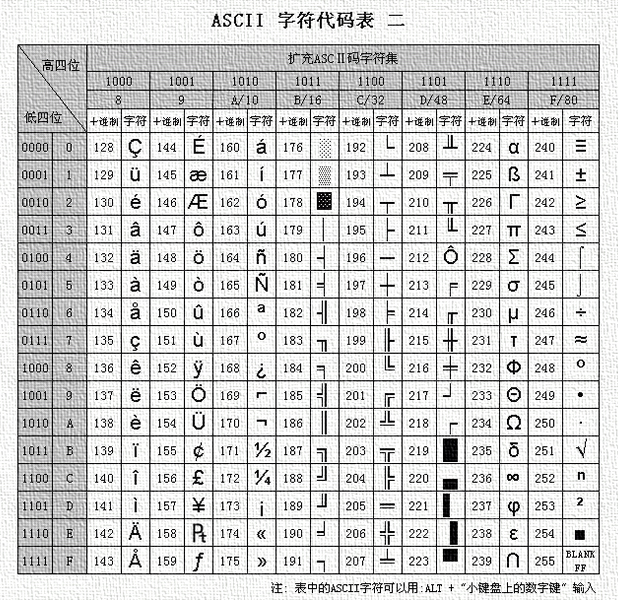
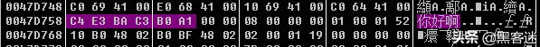

# 前言
一直对这些编码的解码、编码、转码，进制很是疑惑。应用层能解析什么编码，什么进制，进制与编码之间的转换等等。决定研究一下。
# 十进制 二进制 十六进制
在计算机中，所有的数据在存储和运算时都要使用二进制数值表示（因为计算机用高电平和低电平分别表示 1 和 0），而具体用哪些二进制数字表示哪个符号，当然每个人都可以约定自己的一套（这就叫编码），而大家如果要想互相通信而不造成混乱，那么大家就必须使用相同的编码规则，这就是统一编码的原因。简单来说编码就是字符与数值的对应关系。
计算机硬件是 0101 二进制的，16 进制刚好是 2 的倍数，更容易表达一个命令或者数据。二进制是在是太长了，容易看花眼，进制越大，数的表达长度也就越短，十六进制更简短，因为换算的时候一位 16 进制数可以顶 4 位 2 进制数，1111 正好是 F
那么为啥偏偏是 16 进制呢？可能是因为 2、8、16，分别是 2 的 1 次方，3 次方，4 次方，这一点更加方便了进制之间的转换
最早规定 ASCII 字符集采用的就是 8bit (后期扩展了，但是基础单位还是 8bit)，8bit 用 2 个 16 进制直接就能表达出来，不管阅读还是存储都比其他进制要方便
计算机中 CPU 运算也是遵照 ASCII 字符集，以 16、32、64 的这样的方式在发展，因此数据交换的时候 16 进制也显得更好，但计算机最后操作的还是二进制
简单来说就是
- 二进制就是只有 0，1 这两状态，方便计算机用硬件实现，才能有现在的计算机，现在计算机只能读懂二进制。
- 十进制就是我们日常生活中常用的计数方法，一般用于人机交流用的。
- 十六进制就是用 8 位二进制数组成的数制，很方便的和二进制进行转换，我们可以用十六进制观察和执行计算机的指令。
# 计算机内存
想要知道为什么是二进制，就得从底层开始了解了。
# 内存的物理结构
内存实际上是一种名为内存 IC 的电子元件。内存 IC 中有电源、地址信号、数据信号、控制信号等用于 输入输出的大量引脚（IC 的引脚），通过为其指定地址（address），来进行数据的读写。
内存 IC 的引脚配置如下图
- 将电源连接到 VCC 和 GND 后， 就可以给其他引脚传递比如 0 或者 1 这样的信号。大多数情况下，+ 5V 的直流电压表示 1，0V 表示 0。那么上图内存 IC 可以存储多少数据呢？一个内存 IC 能够存储多少数据要看地址信号的个数，因为数据在计算机中存储，每个数据必须对应一个地址，这样这个数据才是有意义的数据。也就是说这个内存 IC 有多少地址就可以存储多少数据。上面的内存 IC 有 A0～A9 共十个地址信 号引脚，表示可以指定 0000000000～1111111111 共 1024 个地址，因此上面的内存 IC 可以存储 1024 个数据。
- 那么一个数据是多大呢？它是由数据信号引脚所确定的，上图内存 IC 中有 D0～D7 共八个数据信号引脚，表示一次可以输入输出 8 位（= 1 字节）的数据。因此，该内存 IC 一共可以存储 1024 个 1 字节的数据。因为 1024 = 1K（计算机领域 K 代表 2 的 10 次幂），所以该内存 IC 的容量就是 1KB。
- 但现在大家使用的计算机至少有 512M 的内存，也就是 512000 个 1KB 大小的内存 IC，当然，一台计算机中不太 可能放入如此多的内存 IC。通常情况下，计算机使用的内存 IC 中会有 更多的地址信号引脚，这样就能在一个内存 IC 中存储数十兆字节的数据。因此，只用数个内存 IC，就可以达到 512MB 的容量。
- 内存 IC 写入数据的过程是，首先接通电源 (+5V 或 0V) 指定数据，然后地址信号指定存储场所，再把数据的值输入给数据信号存储在指定位置。读取数据时，只需通过 A0～A9 的地址信号指定数据的存储场所，指定地址中存储的数据就会被输出到 D0～D7 的数据信号引脚 。控制信号是用以控制目前是读操作还是写操作。当写入数据时 WD 设为 1，读取数据时 RD 设为 1。
- 总体来讲，内存 IC 内部有大量可以存储 8 位数据的地方，通过地址指定这些场所， 之后即可进行数据的读写。
# 内存的逻辑模型
虽然内存的实体是内存 IC，不过从程序员的角度来看，也可以把 它假想成每层都存储着数据的楼房，并不需要过多地关注内存 IC 的电 源和控制信号等。如内存为 1KB 时，表示的是下图所示的有 1024 层的楼房（这里地址的值是从上往下逐渐变大，不过也有与此相反的情况）。

不过，程序员眼里的内存模型中，还包含着物理内存中不存在的概念，那就是数据类型。编程语言中的数据类型表示存储的是何种类型的数据，它从内存来看，就是占用的内存大小（占有的楼层数）的意思。比如 C 语言中数据类型 char 代表占用一字节内存大小，short 代表占用 2 字节内存大小，long 代表占用 4 字节内存大小。因此不同的数据类型虽然存放同样的数据，但是他们占用内存的大小是不一样的。

仔细思考一下就会发现，根据程序中所指定的变量的数据类型的 不同，读写的物理内存大小也会随之发生变化，这其实是非常方便的。 大家不妨想一想，假如程序中只能逐个字节地对内存进行读写，那该 多么不便啊。在处理超过 1 个字节的数据时，还必须要编写分割处理 程序。此外，在不同的编程语言中，变量可以指定的数据类型的最大 长度也不相同。C 语言中，8 字节（= 64 位）的 double 类型是最大的。


# 后话
这位师傅后面还写了基于内存理解的几种数据结构，有时间可以了解一下。
链接为 https://blog.csdn.net/qq_34720818/article/details/108369258
# 计算机中的单位
# 什么是 bit？
比特（英语：binary digit），亦称二进制位，指二进制中的一位，是信息的最小单位。bit 是 binary digit（二进制数字）的缩写，由数学家 John Wilder Tukey 提出（可能是 1946 年提出，但有资料称 1943 年就提出了）。这个术语第一次被正式使用，是在香农著名的论文《通信的数学理论》（A Mathematical Theory of Communication）第 1 页中。
电脑是以二进制存储以及发送接收数据的。二进制的一位，就叫做 1 bit。也就是说 bit 的含义就是二进制数中的一个数位，即 “0” 或者 "1"
# 什么是 Byte？
字节（Byte）是数字信息的单位，最常见的是由 8 个 bit 组成。字节是用于编码计算机中单个字符文本的位数，因此它是许多计算机体系结构中最小的可寻址存储单元。
Byte 是字节的英文写法。它的简写为大写字母 “B"。
既然名字叫字节，那肯定跟字符有关系。是的。英文字符通常是一个字节，也就是 1B，中文字符通常是两个字节，也就是 2B。
字节 Byte 和比特 bit 的换算关系是 1 Byte = 8 bit 。
# KB （千字节）
需要了解的是，1 KB 并不是一千字节，因为计算机只认识二进制，所以在这里的 KB，是 2 的 10 次方，也就是 1024 个字节。
另外很多表示存储单位的地方都把 B 写成 b，造成了大家认知的混乱。其实在存储单位计量中出现 b 的地方，它的意思仍然是 B，不要因为 bit 的缩写是 b 就被误导了，在存储计量中是不会用 比特，千比特 这种单位的。但是在网速计量中，b 的真实意思就是指 比特 了，这个我们下面再说。
# 存储单位换算
存储单位换算关系如下
1B（bytes） = 8bit
1KB (Kilobyte 千字节)=1024B，
1MB (Megabyte 兆字节 简称 “兆”)=1024KB，
1GB (Gigabyte 吉字节 又称 “千兆”)=1024MB，
1TB (Trillionbyte 万亿字节 太字节)=1024GB，
1PB（Petabyte 千万亿字节 拍字节）=1024TB，
1EB（Exabyte 百亿亿字节 艾字节）=1024PB，
1ZB (Zettabyte 十万亿亿字节 泽字节)= 1024 EB,
1YB (Yottabyte 一亿亿亿字节 尧字节)= 1024 ZB,
1BB (Brontobyte 一千亿亿亿字节)= 1024 YB
# 硬盘空间少比买的时候要少？
是因为 换算时他们将 1024 按照 1000 来算
256G 的硬盘： 256G= ？ Bytes：按 1000 来算
256G 硬盘
1K = 1000B
1M = 1000K
1G = 1000M = 100010001000B =1000000000B
256G = 256000000000B
256000000000/1024/1024/1024 B = 238.4185791015625 G
500GB10001000*1000/1024/1024/1024=465.66
# 传输速率
传输速率这个词，顾名思义，以某个东西作为单位，来描述单位时间内传输某个东西的数量。
比如下载软件上面，常常显示的 5.5MB/s，就是以字节 (Byte) 单位表示的传输速率。
计算机里以 Byte 作为存储的最小单位，所以下载时顺势就用了这个单位，显得直观。
一般而言，我们用 bit 来描述，传输时携带的信息量。另一常见，且容易搞混的，是波特率这个词。
bit 率是指，单位时间内传输过来的信息量。
baud 率则是指单位时间内传输过来的符号量。
这里有个弯要绕过来，因为常识层面大多数的信息都是以 01 两种符号来传输，所以两者在数值层面常常是相等的，相等自然弄混。
实际上符号量 可以不等于信息量。
举个例子，评价里常常有 优 良 中 差 4 个选项，每个字相当于 1 个符号。用一个字就可以表达。但如果换成 0 跟 1 两种符号来表示，那么优良中差是 4 种状态，只能表示成 00，01，10，11 ，那么每种状态，都用了两个位置来表示。这种情况下，1 个字 = 2bit。
网络技术中的速率指的是连接在计算机网络上的主机在数字信道上传送数据的速率，它也称为数据率（data rate）或比特率（bit rate）。速率是计算机网络中最重要的一个性能指标。速率的单位是 b/s（比特每秒）（或 bit/s, 有时也写成 bps，即 ibt per second）。当数据率较高时，就可以用 kb/s（k=103 = 千）、Mb/s (M=106 = 兆)、Gb/s（G=10^9 = 吉）或 Tb /s（T=10^12 = 太）。现在人们常用更简单的并且是很不严格的记法莱描述网络的速率，如 100M 以太网，而省略了单位中的 b/s，它的意思是速率为 100Mb/s 的以太网。
# 32 位和 64 位 /31bit 和 64bit 的区别
1、对操作系统来说，64 位和 32 位指最大内存寻址空间，32 位最大 4GB（232），64 位理论上 16EB (264)，但现在一般都是 2^48
2、对硬件来说，64 位和 32 位指数据宽度，64 位一次取 8 字节 y 也就是 64bit，32 取 4 字节也就是 32bit，所以理论上 64 位比 32 位性能提高了一倍。实际上的情况是，达不到，内存变大了，需要寻址更多。
3、对应用程序来说，应用程序基于操作系统 和硬件，其使用的指令宽度随系统和硬件变化。
32 位和 64 位区别的最常见表现就是 64 万位操作系统可以支持 4G 以上的内存。缺点也是内存占用，64 位代码比 32 位代码多占用空间，
现在来看 64 位操作系统兼容 32 位软件。反之则不行。
32 位和 64 位最本质的区别是 CPU 来决定的，操作系统的位数是是看最大能把 CPU 的性能发挥到多高。我们现在在市面上见到的 CPU 都是 64 位的，32 位的 CPU 已经是老古董了。
# ASCII
ASCII 码是由美国有关的标准化组织出台的，后来它被国际标准化组织（International Organization for Standardization, ISO）定为国际标准，称为 ISO 646 标准。该标准统一规定了常用字符（像 a、b、c、d 这样的 52 个字母（包括大写）以及 0、1 等数字还有一些常用的符号（例如：%、!、+ 等）总共 128 个字符）如何用二进制数来表示。ASCII 分为标准 ASCII 码使用 7 位二进制数组合来表示 128 种字符和扩展 ASCII 的 8 位二进制数组合来表示 256 种字符。
# 标准 ASCII 码
0-127 所包含的码称为标准 ASCII 编码，如：空格 SPACE 是 32（二进制 00100000），大写的字母 a 是 97（二进制 01100001）。这 128 个符号（包括 32 个不能打印出来的控制符号），只占用了一个字节 (8 位) 的后 7 位，最前面的一位统一规定为 0。
下面是标准 ASCII 码表：
# 扩展 ASCII 码
后 128 个称为扩展 ASCII 码。扩展 ASCII 码允许将每个字符的第 8 位用于确定附加的 128 个特殊符号字符、外来语字母和图形符号；
下面是扩展 ASCII 码表：

0b11111111 = 255 = 0xFF
0b01111111 = 127 = 0x7F
# Python 小知识
在python中可以使用内置函数ord()查看单个字符的ASCII码，例如： | |
>>> ord('a') | |
97 | |
ord() 函数实质是返回字符的 Unicode 码对应的十进制数值。例如 | |
>>> ord("国") | |
22269 | |
另外，ord()逆函数chr()查看编码对应的字符，例如： | |
>>> chr(97) | |
'a' | |
>>> chr(22269) | |
'国' |
# GBK
由于 ASCII 编码是不支持中文的，但又需要寻求一种编码方式来支持中文。于是，国人就定义了一套编码规则：当字符小于 127 位时，与 ASCII 的字符相同，但当两个大于 127 的字符连接在一起时，就代表一个汉字，第一个字节称为高字节（从 0xA1-0xF7）, 第二个字节为低字节（从 0xA1-0xFE）, 这样大约可以组合 7000 多个简体汉字。这个规则叫做 GB2312。
由于中国汉字很多，有些字还是无法表示，于是重新定义了规则：不在要求低字节一定是 127 之后的编码，只要第一个字节是大于 127，就固定表示这是一个汉字的开始，不管后面跟的是不是扩展字符集里的内容。这种扩展之后的编码方案称之为 GBK，包含了 GB2312 的所有内容，同时新增了近 20000 个新的汉字（包括繁体字）和符号。但是，中国有 56 个民族，每个民族都有自己的文字，所以，对 GBK 编码规则进行了扩展，又加了近几千个少数民族的字符，再次扩展后得编码叫做 GB18030，GBK 字符是被包含在 GB18030 字符内的，与 GBK 基本向后兼容。GB18030 共收录汉字 70,244 个.
Python 中使用 gbk 和 gb18030 编码 ' 韩' 字：
>>> "韩".encode("gb18030") | |
b'\\xba\\xab' | |
>>> "韩".encode("gbk") | |
b'\\xba\\xab' |
# ANSI
为使计算机支持更多的语言，通常使用 0x80~0xFFFF 范围内的 2 个字节来表示 1 个字符。比如：汉字 ' 中 ' 在中文操作系统中，使用 0xD6、0xD0 这两个字节存储。但不同的国家和地区制定了不同的标准，由此产生了 GB2312、GBK、GB18030、Big5、Shift_JIS 等各自的编码标准。这些使用多个字节来代表一个字符的各种延伸编码方式，被称为 ANSI 编码。在简体中文 Windows 操作系统为中，ANSI 编码代表 GBK 编码；在繁体中文 Windows 操作系统中，ANSI 编码代表 Big5；而在日文 Windows 操作系统中，ANSI 编码代表 Shift_JIS 编码。不同 ANSI 编码之间互不兼容，当信息在国际间交流时，无法将属于两种语言的文字，存储在同一段 ANSI 编码的文本中。ANSI 编码表示英文字符时用一个字节，表示中文用两个或四个字节。
# Unicode
因为世界上有很多国家，而每个国家都定义一套自己的编码标准，结果相互之间无法解析编码进行通信，所以 ISO（国际标准化组织）决定定义一套编码方案来解决所有国家的编码问题，这个新的编码方案就叫做 Unicode。注意 Unicode 不是一个新的编码规则，而是一套字符集（为每一个「字符」分配一个唯一的 ID（学名为码位 / 码点 / Code Point）），可以将 Unicode 理解为一本世界编码的字典。具体的符号对应表，可以查询，或者专门的汉字对应表。
在 Python 中查看字符对应 Unicode 数值的方法：
>>> "中".encode("unicode_escape") | |
b'\\\u4e2d' | |
>>> b'\\\u4e2d'.decode("unicode_escape") | |
'中' |
需要注意的是，Unicode 只是一个符号集，它只规定了符号的二进制代码，却没有规定这个二进制代码应该如何存储。比如，汉字严的 Unicode 是十六进制数 4E25，转换成二进制数足足有 15 位（1001110 00100101），也就是说，这个符号的表示至少需要 2 个字节。表示其他更大的符号，可能需要 3 个字节或者 4 个字节，甚至更多。这里就有几个严重的问题，第一个问题是，计算机如何才能区别 Unicode 和 ASCII ？还有计算机怎么知道三个字节表示一个符号，而不是分别表示三个符号呢？第二个问题是，我们已经知道，英文字母只用一个字节表示就够了，如果 Unicode 统一规定，每个符号用三个或四个字节表示，那么每个英文字母前都必然有二到三个字节是 0，这对于存储或传输来说是极大的浪费，文本文件的大小会因此大出二三倍，这是无法接受的。它们造成的结果是：出现了 Unicode 的多种存储方式，也就是说有许多种不同的二进制格式，可以用来表示 Unicode。也导致了 Unicode 在很长一段时间内无法推广，直到 UTF 编码的出现。
# UTF-8
由于 Unicode 比较浪费网络和硬盘资源，因此为了解决这个问题，就在 Unicode 的基础上，定制了一套编码规则（将「码位」转换为字节序列的规则【编码 / 解码 可以理解为 加密 / 解密 的过程】），这个新的编码规则就是 UTF-8。UTF-8 采用 1-4 个字符进行传输和存储数据，是一种针对 Unicode 的可变长度字符编码，又称万国码。
Unicode 与 Utf-8 编码规则：使用下面的模板进行互转
Unicode 符号范围（十六进制） | UTF-8 编码方式 (二进制)
0000 0000-0000 007F | 0xxxxxxx
0000 0080-0000 07FF | 110xxxxx 10xxxxxx
0000 0800-0000 FFFF | 1110xxxx 10xxxxxx 10xxxxxx\
0001 0000-0010 FFFF | 11110xxx 10xxxxxx 10xxxxxx 10xxxxxx
Unicode 字符通过对应模板加上标志位就后是 Utf-8 编。例如："迷" Unicode 的编码为 \\u8ff7 用二进制表示为：10001111 11110111，8ff7 处于第三个模板范围内，把 10001111 11110111 按模板分成三份 1000 111111 110111，然后加上标志位的二进制为：11101000 10111111 10110111 所以 utf-8 编码是 "E8BFB7"
Python 中 Unicode 字符转 UTF-8 编码：
>>>'迷'.encode('utf-8') | |
b'\\xe8\\xbf\\xb7' |
那么如何区分 utf-8 各个字符的？utf-8 区分每个字符的开始是根据编码的高位字节来区分的，比如：用一个字节表示的字符，第一个字节高位以 "0" 开头；用两个字节表示的字符，第一个字节的高位为以 "110" 开头，后面一个字节以 "10 开头"；用三个字节表示的字符，第一个字节以 "1110" 开头，后面两个字节以 "10" 开头；用四个字节表示的字符，第一个字节以 "11110" 开头，后面的三个字节以 "10" 开头。这样计算机就可以认出每个字符由几个字节组成，才能显示出正确的信息。
# UTF-8 和 Unicode 转换
比如汉字 "智"，utf-8 编码是 "\xe6\x99\xba" 对应的二进制为："11100110 10011001 10111010"，由于 utf-8 中一个汉字是 3 个字节，所以对应的模板为：
0000 0800-0000 FFFF | 1110xxxx 10xxxxxx 10xxxxxx
11100110 10011001 10111010 | UTF-8 编码成的二进制 1110xxxx 10xxxxxx 10xxxxxx | 对应模版 0110 011001 111010 | 去除模版中的标志位后 01100110 01111010 代表十六进制 667A，因此根据规则转换得出 "智"Unicode 的编码为 667A。
同样，根据 Unicode 中字符的编码位置，也能找到对应的 utf-8 编码。例如：UTF-8 编码：\xe8\xbf\xb7，用二进制表示为：11101000 10111111 10110111，有 3 个字节属于第三个模板范围，按模板去掉标志位后是：1000 111111 110111，结果就是 ' 迷' 字的 Unicode 字符 8ff7。
>>> b'\\\u8ff7'.decode('unicode_escape') | |
'迷' |
# Unicode 与 GBK 编码的转换
Unicode 与 GBK 是两个完全不同的字符编码方案，其两者没有直接关系。如果要对其进行相
互转换，最直接最高效的方法是查询各自的字符对照表。
Python 实现 Unicode 与 GBK 转换（将 Unicode 对应数值：\\u8ff7 转 GBK 字符方法）：
>>> l_u = b'\\\u8ff7'.decode('unicode_escape') | |
>>> l_u.encode('gbk') | |
b'\\xc3\\xd4' |
UTF-8、Unicode 与 GBK 的关系
Utf-8（utf-16）编码 Unicode= 编码 = GBK（ANSI）
Utf-8（utf-16）解码 Unicode= 解码 =====GBK（ANSI）
总结：Unicode 字符可以通过编码可以得到 UTF-8 和 GBK，相反 UTF-8 和 GBK 也可以通过解码得到 Unicode，但 GBK 和 UTF-8 之间无法直接转换，只能转换到 Unicode 后再转到另一编码。其实所谓编码转换是数值与字符的转换。
# URL 编码 / 解码
URL 编码就是一个字符 ascii 码的十六进制。不过稍微有些变动，需要在前面加上 "%"。比如 ""，它的 ascii 码是 92，92 的十六进制是 5c，所以"" 的 URL 编码就是 %5c。那么汉字的 URL 编码呢？很简单，非 ASCII 字符的编码一般有两种，是以 GBK 或 UTF8 进行编码。例如："迷" 对应的 UTF-8 编码 \xe8\xbf\xb7，则 "胡" 的 URL 编码是 % E8% BF% B7。解码方法是去掉 %，之后再进行 UTF-8 解码，就可以得到实际的字符了。
计算机是以什么编码存储和传输数据的呢？
支持 Unicode 的应用程序（python、VS、VC、Google Chrome、notepad 等大多数程序都支持（部分程序需要设置编码）。
不支持 Unicode 的应用程序（易语言等）则会以控制面板 — 区域 — 管理中设置的编码（ANSI）进行存储，例如：简体中文 (GBK)、繁体中文 (Big5) 等。
不支持 Unicode 的应用程序（易语言等）则会以控制面板 — 区域 — 管理中设置的编码（ANSI）进行存储，例如：简体中文 (GBK)、繁体中文 (Big5) 等。
例如：以国产编程语言‘易语言’为例，看一下变量在内存中是以什么编码存储的
a ＝ "你" | |
调试输出 (取指针地址_文本型 (a)) | |
* 1966420 |
通过 CE 查看此内存地址中对应的值为 0000E3C4，而 "你" 的 GBK 编码正好为：E3C4。由此得知，易语言软件是以 GBK 编码进行数据存储和传输的。
再看看数据在内存中如何存储：
使用 OD 查看

使用 CE 查看

多字符变量 "你好啊" 的 GBK 字符：c4e3bac3b0a1


OD:

CE（8 字节显示）:
由此可以看出，内存的存储编码方式与软件支持的编码方式是一致的（易语言：GBK 字符；python：Unicode 字符）；计算机内存数据存储一般采用大端模式 (内存高位对数据低位，内存低位对数据高位) 。OD 默认是从内存低位到高位显示数据，CE 默认是从内存高位到低位显示数据，所以看到的十六进制数值是相反的。存储占用的内存大小，会根据变量的数据类型申请对应大小的内存来存储。
# 参考
http://www.cjzzc.com/article/582.html
https://blog.csdn.net/qq_36081265/article/details/81572381
https://m.idongde.com/q/8284e8Fb7E93Cd79/a4402669.shtml
https://www.jianshu.com/p/919a9019e6ac
https://blog.csdn.net/qq_34720818/article/details/108369258
https://blog.csdn.net/u011608180/article/details/85157061
https://blog.csdn.net/chuxin_mm/article/details/84870691
https://www.zhihu.com/question/372371160/answer/1020202233
https://www.zhihu.com/question/285840051/answer/452538077